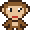
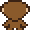
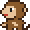
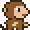
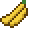
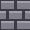
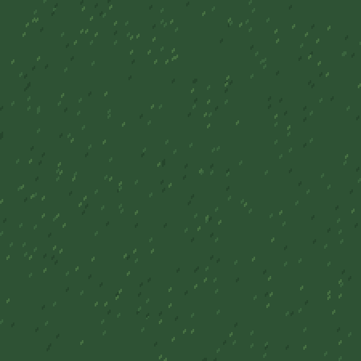
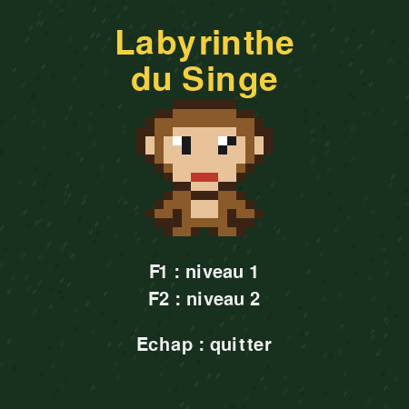

Avant de commencer
Ce TP suppose que tu sais déjà écrire un petit programme Python : des variables, des conditions, des boucles « pour » et « tant que », des listes et des fonctions. Les classes vont servir aussi, mais on t'explique l'idée au moment où on en a besoin.
Il te faut Pygame. Dans un terminal, installe-le avec pip (le paquet s'appelle pygame). Pour vérifier l'installation, Pygame fournit des jeux d'exemple : lance celui qui s'appelle aliens, dans le module pygame.examples. Si un petit jeu de vaisseaux s'ouvre, tout est prêt.
Cette page ne te donne aucune ligne de code. Tu y trouveras ce qu'il faut comprendre, les outils de Pygame qui existent, la liste de ce que ton programme doit faire, et des indices écrits en français. C'est toi qui écris tout.
Si tu bloques, ouvre les indices un par un, et cherche au moins 5 minutes avant d'ouvrir le suivant. Ton meilleur allié reste le message d'erreur : lis sa dernière ligne.
Avance par toutes petites étapes, et lance ton programme après chaque modification. Si ça casse, tu sais que c'est ce que tu viens d'écrire. Écrire 50 lignes d'un coup puis tester, c'est se perdre.
Le cahier des charges
Avant de coder, on écrit noir sur blanc ce que le jeu doit faire. C'est la liste qui te servira à vérifier ton travail à la fin.
| Règle | Détail |
|---|---|
| But du jeu | Le singe part en haut à gauche et doit atteindre les bananes en bas à droite. |
| Accueil | Au lancement, une image d'accueil invite à choisir un niveau avec F1 ou F2. |
| Niveaux | Chaque labyrinthe est rangé dans un fichier texte (n1, n2…), facile à modifier. |
| Commandes | Les flèches du clavier déplacent le singe d'une case à la fois. Il ne traverse pas les murs. |
| Images | Le singe change d'image selon la direction : de face, de dos, de profil gauche, de profil droit. |
| Fenêtre | Un carré de 15 cases sur 15. Une case mesure 30 pixels, donc la fenêtre fait 450 × 450 pixels. |
| Retour | Échap en jeu ramène à l'accueil. Échap à l'accueil quitte le programme. |
| Victoire | Quand le singe arrive sur les bananes, on revient à l'accueil pour choisir un autre niveau. |
Cases et pixels : l'idée clé du TP
Le singe ne glisse pas pixel par pixel : il saute de case en case, comme un pion sur un damier. Ton programme va donc manipuler deux sortes de coordonnées.
La position en cases : le numéro de colonne et le numéro de ligne, de 0 à 14. C'est elle qu'on utilise pour savoir s'il y a un mur.
La position en pixels : là où Pygame doit dessiner l'image. On l'obtient en multipliant le numéro de case par la taille d'une case.
La case de la colonne 3 et de la ligne 2 commence donc au pixel (90, 60). Le coin en haut à gauche de la fenêtre est le pixel (0, 0), et y augmente vers le bas.
Images et niveaux
Les images te sont fournies : ce n'est pas le sujet du TP. Récupère-les auprès de l'animateur, ou enregistre-les depuis cette page (clic droit sur chaque image, « Enregistrer l'image sous… »). Range-les toutes dans un dossier images, dans le dossier de ton jeu, avec exactement ces noms.
| Image | Fichier | Rôle |
|---|---|---|
 | singe_bas.png | Le singe qui descend (on voit son visage) |
 | singe_haut.png | Le singe qui monte (on voit son dos) |
 | singe_gauche.png | Le singe qui va à gauche |
 | singe_droite.png | Le singe qui va à droite |
| depart.png | La case de départ, en haut à gauche | |
 | arrivee.png | Les bananes, en bas à droite. Le fond est transparent. |
 | mur.png | Un mur : le singe ne passe pas |
 | fond.png | Le sol, dessiné derrière tout le reste (450 × 450) |
 | accueil.png | L'écran d'accueil (450 × 450) |
Les fichiers de niveau
Un niveau est un simple fichier texte de 15 lignes de 15 caractères. Chaque caractère représente une case :
| Caractère | Signification |
|---|---|
| d | la case de départ |
| a | l'arrivée (les bananes) |
| m | un mur |
| 0 | une case vide, où le singe peut marcher |
Crée deux fichiers sans extension, nommés n1 et n2, et colle ces niveaux dedans. Ce sont des données, pas du code : tu peux les copier.
Tu peux presque trouver le chemin à l'œil, en suivant les 0. Plus bas, un éditeur te permettra de dessiner tes propres niveaux.
Organiser ses fichiers
On pourrait tout écrire dans un seul fichier, mais il deviendrait vite illisible. On découpe le jeu en trois scripts, chacun avec un rôle clair :
Si un jour tu veux des cases de 40 pixels au lieu de 30, tu changes un seul nombre dans le fichier de constantes, et tout le jeu suit. Par convention, on écrit le nom des constantes en MAJUSCULES : ça rappelle qu'on ne les modifie pas pendant le jeu.
Ouvrir la fenêtre
- Objectif
- une fenêtre carrée de 450 pixels, avec un titre et une icône, qui se ferme proprement quand on clique sur la croix.
- Fichiers
- constantes.py et labyrinthe.py
Ce qu'il faut comprendre
Un programme Pygame commence toujours de la même façon : on démarre Pygame, on ouvre une fenêtre, puis on entre dans une boucle qui tourne jusqu'à ce que le joueur quitte. Sans boucle, le programme arrive à sa dernière ligne et la fenêtre disparaît aussitôt.
À chaque tour de cette boucle, il faut demander à Pygame la liste des événements : touches appuyées, clics, croix de la fenêtre… Une fenêtre qui ne lit pas ses événements en permanence est considérée comme plantée : Windows affiche « Ne répond pas ».
Ta boîte à outils
Ta mission
- Remplis le fichier de constantes. Il doit contenir :
- le nombre de cases sur un côté (15) et la taille d'une case en pixels (30) ;
- la taille de la fenêtre, calculée à partir des deux précédentes, et non écrite à la main ;
- le titre de la fenêtre et le chemin de l'image d'icône (une des images du singe) ;
- le chemin de chaque image du décor : accueil, fond, mur, départ, arrivée. Les chemins commencent par le nom du dossier, images, suivi d'une barre oblique.
- Commence le programme principal. En haut, écris une description du jeu entre triples guillemets (son nom, son but, la liste des fichiers). Puis importe Pygame, tout le contenu de pygame.locals et tout le contenu de ton fichier de constantes.
- Démarre Pygame et ouvre la fenêtre, avec son titre et son icône, en utilisant tes constantes.
- Écris une boucle provisoire qui tourne tant qu'une variable vaut vrai, lit les événements, et passe cette variable à faux quand le joueur clique sur la croix. Après la boucle, ferme Pygame.
Indice 1La fenêtre s'ouvre et se ferme aussitôt
Ton programme atteint sa dernière ligne. Il lui faut une boucle « tant que » contrôlée par une variable, qu'on pourrait appeler continuer, mise à vrai juste avant la boucle.
Indice 2Comment importer tout un module ?
Il existe deux façons d'importer en Python : le module entier (on écrit alors son nom devant chaque élément), ou « depuis ce module, importe tout », avec une étoile. C'est la deuxième qui permet d'écrire juste QUIT au lieu du nom complet. Ton fichier de constantes s'importe de la même façon, avec son nom sans le « .py ».
Indice 3La boucle des événements
Dans ta boucle « tant que », place une boucle « pour » qui parcourt ce que renvoie pygame.event.get. Pour chaque événement, une condition vérifie si son type est égal à QUIT. Si oui, ta variable de boucle passe à faux.
Ça marche si…
- une fenêtre noire de 450 × 450 s'ouvre, avec le titre que tu as choisi ;
- la petite tête de singe apparaît comme icône ;
- la croix ferme la fenêtre sans message d'erreur.
L'accueil et les boucles imbriquées
- Objectif
- afficher l'écran d'accueil, choisir un niveau avec F1 ou F2, quitter avec Échap ou la croix.
- Fichier
- labyrinthe.py (tu remplaces la boucle provisoire)
Ce qu'il faut comprendre
Le jeu passe sans arrêt de l'accueil au labyrinthe, puis du labyrinthe à l'accueil. La façon la plus simple d'organiser ça, c'est de mettre des boucles dans une boucle. Voici l'organisation de tout le programme, que tu construiras sur les étapes 2 à 6 :
- F1 → on retient « niveau 1 » et on quitte l'accueil
- F2 → on retient « niveau 2 » et on quitte l'accueil
- Échap ou croix → on arrête tout
- flèches → déplacer le singe
- Échap → fin de la partie, retour à l'accueil
- croix → on arrête tout
- redessiner l'écran, puis vérifier si le singe a atteint les bananes
Quand une boucle intérieure se termine, on retombe dans la boucle principale, qui recommence au début : on revoit l'accueil. Chaque boucle a sa propre variable vrai/faux, qu'on passe à faux pour en sortir. Pour « arrêter tout », il faut donc arrêter plusieurs boucles à la fois.
Dessiner se fait en deux temps. D'abord on colle des images sur la fenêtre, mais en coulisses : rien n'apparaît encore. Ensuite on demande à Pygame de montrer d'un coup tout ce qui a été collé.
Ta boîte à outils
Ta mission
- Avant les boucles, crée l'horloge et charge l'image d'accueil (pense à la préparer avec convert).
- Écris la boucle principale. Au début de chaque tour : colle l'image d'accueil en (0, 0), montre l'écran, remets la variable de la boucle d'accueil à vrai, et la variable du choix de niveau à « rien ».
- Écris la boucle d'accueil à l'intérieur. À chaque tour : limite la vitesse, puis lis les événements :
- croix ou Échap : on doit sortir de l'accueil et de la boucle principale ;
- F1 : on retient le nom du fichier du niveau 1 et on sort de l'accueil ;
- F2 : pareil pour le niveau 2.
- Après la boucle d'accueil (toujours dans la boucle principale) : si un niveau a été choisi, affiche son nom dans la console. C'est provisoire, juste pour tester. Le jeu viendra ici plus tard.
Questions à te poser avant de coder
- Combien de variables vrai/faux me faut-il, et laquelle contrôle quelle boucle ?
- Pourquoi faut-il remettre ces variables à zéro au début de chaque tour de la boucle principale, et pas une seule fois au début du programme ?
- Si le joueur quitte depuis l'accueil, comment éviter que le jeu se lance quand même ?
Indice 1Comment sortir de tout ?
Pour quitter le programme depuis l'accueil, il faut que deux variables passent à faux : celle de la boucle d'accueil (pour en sortir tout de suite) et celle de la boucle principale (pour qu'elle ne recommence pas).
Indice 2Et le choix du niveau ?
Si on quitte, la variable du choix reste à « rien ». Il suffit donc, après la boucle d'accueil, de tester si le choix est différent de « rien » avant de lancer quoi que ce soit. En Python, on teste ça avec les mots is not.
Indice 3Une seule touche à la fois
Pour les touches, commence par vérifier que le type de l'événement est KEYDOWN. Ensuite seulement, une suite de conditions « si… sinon si… » compare l'attribut key à chaque touche possible.
Sur beaucoup de portables, F1 règle le son ou la luminosité. Il faut alors appuyer sur Fn + F1. Tu peux aussi accepter en plus la touche 1 : elle s'appelle K_1 (et K_KP1 sur le pavé numérique).
Ça marche si…
- l'écran d'accueil s'affiche au lancement ;
- F1 écrit le nom du niveau 1 dans la console, puis l'accueil reste à l'écran ;
- F2 écrit le nom du niveau 2 ;
- Échap et la croix ferment le programme, sans rien écrire dans la console.
Lire un niveau dans un fichier
- Objectif
- transformer le fichier d'un niveau en une liste de listes, pour pouvoir demander « qu'y a-t-il dans telle case ? ».
- Fichiers
- classes.py, et un petit fichier de test à part
Ce qu'il faut comprendre
Le fichier contient 15 lignes de texte. On va le ranger dans une grande liste qui contient 15 petites listes : une petite liste par ligne du fichier, avec un caractère par case. Pour lire une case, on demande d'abord la ligne dans la grande liste, puis la case dans cette ligne.
Clique sur les cases du niveau 1 pour voir comment on les repère :
Avec une liste de listes, on choisit d'abord la ligne (y), puis la colonne (x). C'est l'inverse de l'habitude des maths « x puis y », et c'est l'erreur la plus fréquente du TP.
Une classe, c'est quoi ?
Une classe est un modèle pour fabriquer des objets. Chaque objet garde ses propres données, appelées attributs, et sait faire des actions, appelées méthodes. À l'intérieur de la classe, l'objet se désigne lui-même par le mot self.
La méthode spéciale __init__ est appelée automatiquement à la création de l'objet : c'est là qu'on donne leur valeur de départ aux attributs. Notre objet « niveau » retiendra le nom de son fichier et sa structure (la liste de listes).
Ta boîte à outils
Ta mission
- Prépare le fichier de classes : une description entre triples guillemets, puis les mêmes imports que le programme principal.
- Crée la classe Niveau. À sa création, elle reçoit le nom d'un fichier de niveau. Elle le garde dans un attribut, et crée un second attribut, la structure, qui vaut une liste vide pour l'instant.
- Ajoute une méthode generer qui ouvre le fichier et le parcourt ligne par ligne. Pour chaque ligne : enlever le retour à la ligne, ignorer la ligne si elle est vide, sinon la transformer en liste de caractères et l'ajouter à une grande liste. À la fin, ranger la grande liste dans l'attribut structure.
- Teste à part. Crée un petit fichier de test qui importe ta classe, fabrique un niveau à partir du fichier n1, appelle sa méthode generer, puis affiche dans la console : le nombre de lignes de la structure, la case en haut à gauche, la case en bas à droite, et la première case de la deuxième ligne.
Indice 1Mes cases contiennent un retour à la ligne en trop
Tu as oublié d'enlever le retour à la ligne avant de découper la ligne. Attention : rstrip ne modifie pas la chaîne, elle en renvoie une nouvelle. Il faut récupérer ce résultat dans une variable.
Indice 2J'ai 16 lignes au lieu de 15
Ton fichier se termine sans doute par une ligne vide. En Python, une chaîne vide est considérée comme fausse dans une condition : un simple test « si la ligne » suffit à l'ignorer.
Indice 3Ma structure est vide
Vérifie deux choses : que tu ranges bien la grande liste dans l'attribut (avec self devant), et que ton test appelle bien generer avant de lire la structure. Créer l'objet ne lit pas le fichier tout seul.
Ça marche si…
- le test affiche 15 lignes, puis d, puis a, puis m ;
- avec le fichier n2, tu obtiens aussi 15 lignes, d et a.
Afficher le niveau
- Objectif
- après F1, voir le labyrinthe complet à l'écran pendant deux secondes, puis revenir à l'accueil.
- Fichiers
- classes.py et labyrinthe.py
Ce qu'il faut comprendre
Pour dessiner le niveau, il faut passer sur chaque case : c'est un double parcours. Une première boucle donne les lignes de la structure, une seconde boucle, à l'intérieur, donne les cases de chaque ligne. Pour chaque case, on a besoin de deux numéros : celui de la ligne et celui de la colonne.
Avec ces numéros, on calcule la position en pixels : x = numéro de colonne × taille d'une case et y = numéro de ligne × taille d'une case. Puis on colle l'image qui correspond au caractère. Les cases vides n'ont besoin de rien : le sol sera déjà dessiné dessous.
Une image qui a un fond transparent (les bananes, le singe) doit être préparée d'une façon spéciale, sinon son fond devient noir. Et comme charger une image prend du temps, on charge chaque image une seule fois, à la création du niveau, et non à chaque dessin.
Ta boîte à outils
Ta mission
- Charge les images du décor à la création du niveau : le mur, le départ et l'arrivée, chacune dans un attribut. Choisis bien entre convert et convert_alpha pour chacune.
- Ajoute une méthode afficher qui reçoit la fenêtre. Elle parcourt la structure avec un double parcours, calcule les pixels de chaque case, et colle l'image du mur, du départ ou de l'arrivée selon le caractère.
- Dans le programme principal, importe ton fichier de classes. Puis, à l'endroit où tu affichais le nom du niveau choisi : charge le fond, crée le niveau, génère-le, colle le fond, demande au niveau de s'afficher, montre l'écran, et attends deux secondes.
Questions à te poser
- Lequel des deux numéros donne x, celui de la ligne ou celui de la colonne ?
- Dans quel ordre coller le fond et le niveau ? Que se passe-t-il si on inverse ?
- Quelles images ont besoin de transparence ?
Indice 1x et y
x est la position horizontale : elle dépend de la colonne. y est la position verticale : elle dépend de la ligne. Utilise ta constante de taille de case plutôt que d'écrire 30.
Indice 2Le double parcours
La boucle extérieure parcourt la structure avec enumerate : elle donne le numéro de ligne et la ligne (une petite liste). La boucle intérieure parcourt cette petite liste, encore avec enumerate : elle donne le numéro de colonne et le caractère.
Indice 3Les bananes ont un carré noir autour
L'image d'arrivée a été préparée sans garder la transparence. Seule convert_alpha la conserve.
Préparer une image a besoin que la fenêtre existe déjà. Crée toujours tes niveaux (et plus tard ton singe) après l'ouverture de la fenêtre.
Ça marche si…
- F1 affiche le niveau 1 avec le drapeau en haut à gauche et les bananes en bas à droite, sur le sol vert ;
- le dessin correspond au fichier n1 (compare la première ligne) ;
- au bout de 2 secondes, l'accueil revient ;
- F2 affiche bien un autre labyrinthe.
Créer le singe
- Objectif
- une classe Perso qui sait où est le singe, quelle image afficher, et comment se déplacer sans traverser les murs.
- Fichier
- classes.py
Ce qu'il faut comprendre
Le singe doit retenir plusieurs informations. Voici ce que ta classe devra garder, avec des noms possibles (tu peux en choisir d'autres) :
| Information | Nom possible | Valeur au départ |
|---|---|---|
| Les 4 images du singe, préparées avec transparence | droite, gauche, haut, bas | chargées depuis le dossier images |
| Sa position en cases | case_x, case_y | la case de départ, en haut à gauche |
| Sa position en pixels | x, y | le coin haut gauche de la fenêtre |
| L'image à afficher en ce moment | image | une des 4 images, au choix |
| Le niveau où il se trouve, pour connaître les murs | niveau | reçu à la création |
Ensuite, une méthode deplacer reçoit une direction (par exemple le texte « droite »). Pour chaque direction, le raisonnement est toujours le même, en quatre temps :
- Est-ce que je reste dans la fenêtre ? Si le singe est déjà au bord, il ne bouge pas.
- La case où je veux aller est-elle un mur ? On regarde dans la structure du niveau. Si c'est un mur, il ne bouge pas.
- Si tout va bien, j'avance d'une case, puis je recalcule ma position en pixels.
- Dans tous les cas, je change d'image : même bloqué, le singe se tourne vers la direction demandée.
Ta mission
Avant de coder, complète ce tableau sur papier. Une fois rempli, le code n'est plus qu'une traduction.
| Direction | Je suis au bord si… | Case à regarder | Ce qui change | Image |
|---|---|---|---|---|
| droite | je suis sur la dernière colonne (la 14) | même ligne, colonne suivante | numéro de colonne + 1, puis x | profil droit |
| gauche | ? | ? | ? | ? |
| haut | ? | ? | ? | ? |
| bas | ? | ? | ? | ? |
- Crée la classe Perso avec toutes les informations du premier tableau. Elle reçoit le niveau à sa création.
- Écris la méthode deplacer pour les quatre directions, en suivant ton tableau.
Indice 1Pourquoi la colonne 14 et pas 15 ?
Les cases sont numérotées de 0 à 14. La dernière porte donc le numéro « nombre de cases moins un ». Utilise ta constante plutôt que d'écrire 14 : ton jeu marchera encore si tu changes la taille de la grille. Et si tu oublies ce test, chercher la case 15 provoque une erreur.
Indice 2Gauche, c'est droite dans un miroir
Pour aller à gauche, on vérifie qu'on n'est pas déjà sur la colonne 0, on regarde la colonne précédente, et on retire 1 au lieu d'ajouter 1.
Indice 3Haut et bas
Monter ou descendre, c'est changer de ligne : ce sont le numéro de ligne et y qui changent. Et comme y augmente vers le bas, monter veut dire diminuer le numéro de ligne. Rappelle-toi aussi l'ordre dans la structure : la ligne d'abord, la colonne ensuite.
Ça marche si…
- le fichier se lance sans erreur de syntaxe ;
- chaque direction teste le bord, puis le mur, puis avance, et change toujours l'image.
On ne peut pas encore jouer : on vérifiera vraiment à l'étape 6. Si tu veux tester tout de suite, crée un singe dans ton fichier de test, déplace-le, et affiche sa position dans la console.
La boucle de jeu
- Objectif
- déplacer le singe avec les flèches, revenir à l'accueil avec Échap ou en atteignant les bananes.
- Fichier
- labyrinthe.py (tu remplaces le test de l'étape 4)
Ce qu'il faut comprendre
Retourne voir le schéma des boucles de l'étape 2 : il ne manque plus que la boucle de jeu. À chaque tour, elle fait toujours trois choses, dans cet ordre :
- Lire le clavier et réagir : déplacer le singe, revenir à l'accueil, ou tout quitter.
- Redessiner tout l'écran : le sol, puis le niveau, puis le singe, puis montrer.
- Vérifier la victoire : le singe est-il sur la case d'arrivée ?
Imagine des feuilles transparentes posées les unes sur les autres. On pose d'abord le sol, puis les murs, puis le singe tout en haut. Si tu inverses l'ordre, le sol recouvre le singe et il disparaît. Et on redessine tout à chaque tour : si tu oublies le sol, l'ancienne image du singe reste à l'écran et il laisse une traînée derrière lui.
Ta boîte à outils
Ta mission
- Prépare la partie : charge le fond, crée et génère le niveau choisi, crée le singe dans ce niveau.
- Écris la boucle de jeu, avec sa propre variable vrai/faux. À chaque tour, limite la vitesse puis lis les événements :
- croix : on arrête la partie et tout le programme ;
- Échap : on arrête seulement la partie ;
- chaque flèche : on demande au singe de se déplacer dans la bonne direction.
- Redessine l'écran dans le bon ordre. Le singe se colle avec son image actuelle, à sa position en pixels.
- Vérifie la victoire : si la case de la structure qui correspond à la position du singe est l'arrivée, la partie s'arrête. Un petit message de félicitations dans la console fait plaisir.
Indice 1Le singe ne bouge pas
Vérifie que le texte donné à ta méthode de déplacement est exactement celui que tu testes dans la classe (même orthographe, sans majuscule ni accent en trop). Vérifie aussi que tu redessines bien l'écran à chaque tour de la boucle de jeu, et pas seulement une fois avant.
Indice 2La croix ne ferme pas le jeu
Comme à l'accueil, quitter depuis le jeu demande d'arrêter deux boucles : celle de la partie et la boucle principale.
Indice 3Détecter la victoire
Le singe connaît sa ligne et sa colonne, et le niveau connaît sa structure. Regarde dans la structure, à la ligne du singe puis à sa colonne, et compare avec le caractère de l'arrivée. Si c'est égal, passe la variable de la boucle de jeu à faux : la boucle principale reprend et réaffiche l'accueil.
Ça marche si… (reprends le cahier des charges)
- le singe avance d'une case par appui sur une flèche, et change d'image selon la direction ;
- il est bloqué par les murs et par les bords de la fenêtre ;
- Échap en jeu ramène à l'accueil, Échap à l'accueil quitte ;
- sur les bananes, on revient à l'accueil et on peut lancer l'autre niveau ;
- la croix ferme le programme à tout moment.
Si toutes les cases sont cochées, tu as écrit seul un vrai jeu graphique : un menu, des niveaux chargés depuis des fichiers, un personnage, des collisions. Montre-le à quelqu'un, puis passe aux défis ci-dessous.
Aller plus loin
Dessine tes propres niveaux
Clique (ou glisse) sur la grille pour poser ou enlever des murs. Le contenu du fichier se met à jour en direct : copie-le dans un nouveau fichier de niveau. L'éditeur vérifie aussi qu'il existe bien un chemin jusqu'aux bananes.
Défis
Classés du plus simple au plus costaud. Pour chacun, on te donne seulement le nom de l'outil Pygame utile : cherche dans la documentation comment il s'utilise.
Un niveau 3
Dessine un niveau avec l'éditeur et lance-le avec F3 (K_F3).
Compteur de pas
Compte les déplacements réussis et affiche-les dans le titre de la fenêtre (set_caption).
Touche maintenue
Le singe avance tant qu'on garde la flèche enfoncée (pygame.key.set_repeat).
Écran de victoire
Affiche « Gagné ! » deux secondes avant l'accueil (pygame.font.Font et sa méthode render).
Chronomètre
Mesure le temps de la partie (pygame.time.get_ticks, en millisecondes).
Un son de victoire
Joue un son quand on gagne (pygame.mixer.Sound).
Une clé et une porte
Ajoute deux nouveaux caractères : la porte reste un mur tant que le singe n'a pas ramassé la clé.
Un serpent qui patrouille
Un ennemi fait des allers-retours. S'il touche le singe, retour au départ.
Pièges classiques
Avant d'appeler à l'aide, cherche ton problème ici. Lis toujours la dernière ligne du message d'erreur : c'est elle qui dit ce qui ne va pas, et les lignes au-dessus disent où.
| Ce que tu vois | La cause probable |
|---|---|
| FileNotFoundError sur une image ou un niveau | Le programme n'est pas lancé depuis le dossier du jeu, ou un fichier est mal nommé, ou il n'est pas dans le dossier images. |
| No video mode has been set | Une image est préparée avant l'ouverture de la fenêtre. Crée le niveau et le singe après la fenêtre. |
| La fenêtre reste noire | Tu colles des images mais tu ne demandes jamais à Pygame de les montrer. |
| La fenêtre « ne répond pas » | Une boucle tourne sans lire les événements. |
| Le singe laisse une traînée | Le sol n'est pas redessiné à chaque tour de la boucle de jeu. |
| Le singe est invisible | Il est dessiné avant le sol ou le niveau. Il doit être collé en dernier. |
| Le singe traverse des murs, mais pas tous | Colonne et ligne inversées quand tu lis la structure : la ligne d'abord, la colonne ensuite. |
| IndexError: list index out of range | Le test du bord est oublié ou faux, ou le fichier de niveau a une ligne vide de trop. |
| Les bananes ont un carré noir autour | L'image n'a pas gardé sa transparence. |
| Rien ne se passe avec F1 | Sur un portable, essaie Fn + F1. |
| NameError sur QUIT ou K_F1 | Il manque l'import de tout le contenu de pygame.locals. |
| NameError sur une constante | Le fichier de constantes n'est pas importé, ou le nom est mal écrit (attention aux majuscules). |
| IndentationError | Un bloc n'est pas décalé correctement. Dans une classe, les méthodes sont décalées d'un cran, et leur contenu de deux. |
Mémo Pygame
Tous les outils de Pygame dont tu as besoin pour ce TP, au même endroit. Pour savoir exactement comment les écrire, la documentation officielle se trouve sur pygame.org/docs.